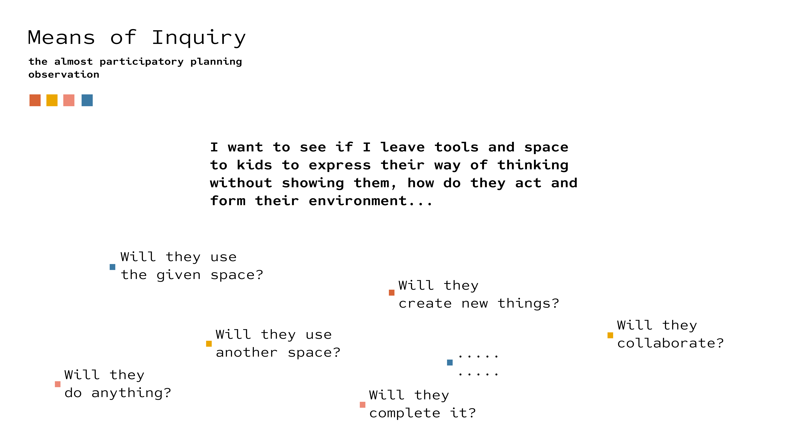
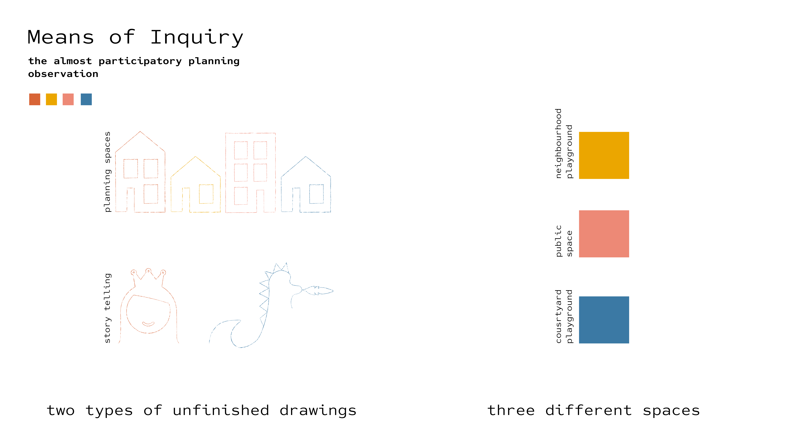
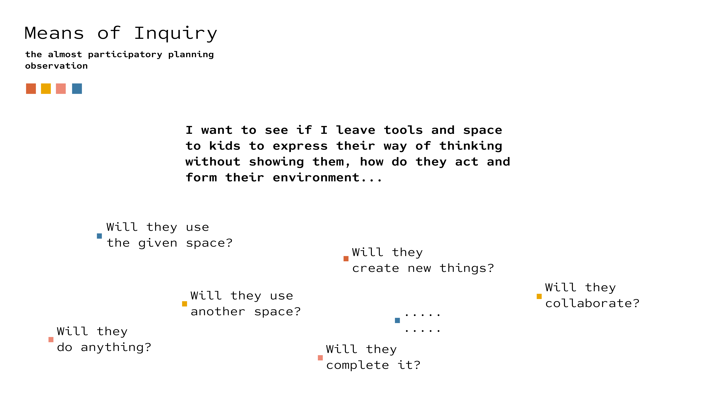
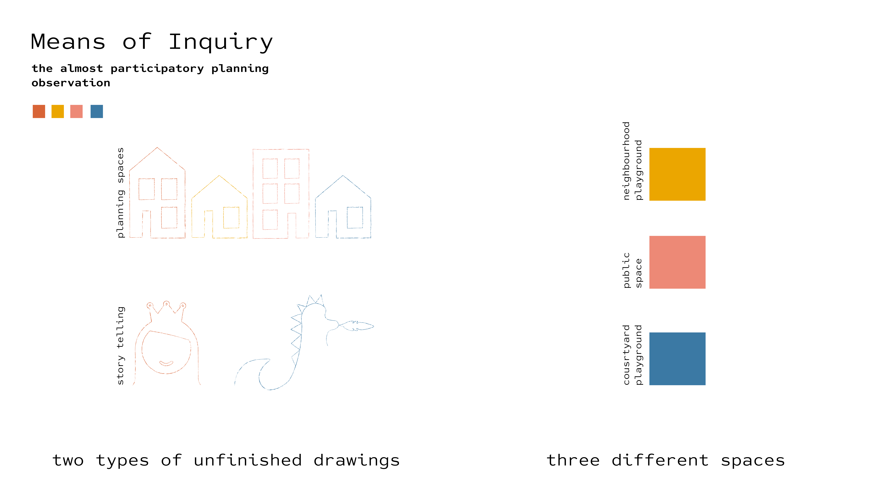
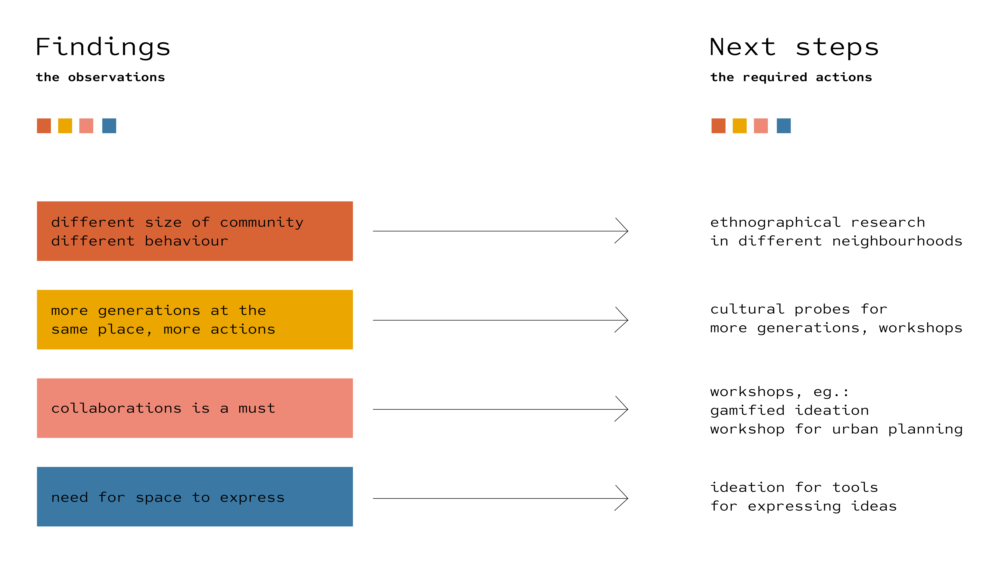
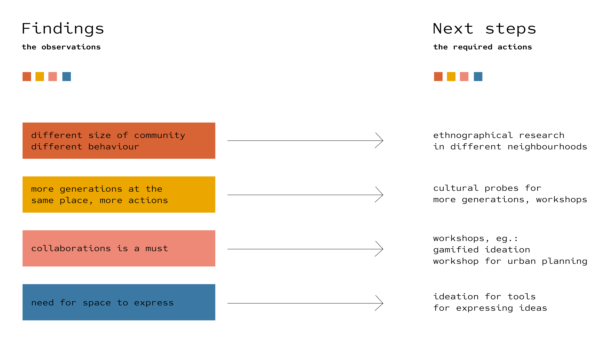

 

My Design Space and the second role of prototyping
This week we created our own design spaces based on our new me map, collecting all the tools, knowledge, connections, events and places we can use for our research and in which we will continue our lives now as our new selves as designers, thinkers or change makers. The same time we had to choose from the 4 roles of prototyping we studied about: Experimental component, Means of Inquiry, Research archetype and Vehicle inquiry and create and experiment based on that. The chosen role also had to be visualised on our design space as well.
My design space
So starting with my design space, I created a space that is mostly a visualisation of the real space I will move around. I would like to know more about how our neighbourhoods operates and how they see and can can their own environment, so I have to use the city where I live as my design space. However, all the thoughts, tools, people and spaces that are included build on eachotother in other cities for distributed research, connections and challenge. I defined my thoughts as an inner space and the spaces I have to visit as the outer space, but the sense makers that create a bridge in between are the people and the thoughts which I’m operating with. On the map I show ideas and thoughts which are all surrounded with people who I ned to talk to, spaces I need to visit and tools to use for knowing more, for iterating and to solve them.
The almost participatory planning - probe
I chose the 2nd role of prototyping, the means of inquiry. And why? To collect and record a phenomena, by that I mean to gain more knowledge about a hypothesis, which is a key part to know more about my fight. I wanted to know more about the agency of kids in their neighbourhoods. So, I asked the question from myself: I want to see if I leave tools and space to kids to express their way of thinking without showing them, how do they act and form their environment…
And then, I drew and leave the tools for creating on the ground. While leaving the spaces and coming back sometimes, or while observing one I had many more thoughts: Will they use the given space?, Will they create new things?, Will they collaborate?, Will they use another space?, Will they do anything? Or what else could happen? I was opened for any results that can help me creating further questions.